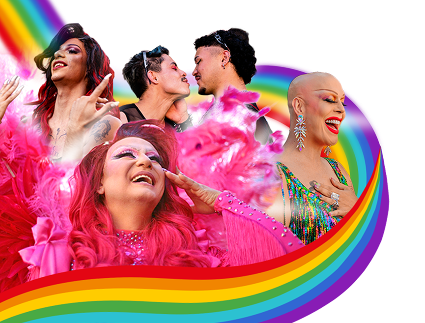
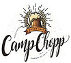
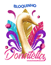
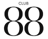

Confira a participação na Parada 2026.

PARADA LGBTQIAPN+ DE CAMPINAS
A CIDADE É
NOSSA
A Parada LGBT+ de Campinas é um manifesto político, cultural e de celebração. É a nossa voz nas ruas, por mais respeito, direitos e representatividade.
Parada LGBTQIAPN+ de Campinas
Mais que um evento, um futuro mais diverso.
27 de Junho de 2027
Centro de Campinas
00
Dias
:
00
Horas
:
00
Minutos
:
00
Segundos
PERCURSO DOS TRIOS
- Avenida Francisco Glicério (com concentração no Largo do Rosário)
- Praça Guilherme de Almeida
- Avenida Doutor Moraes Salles
- Avenida Irmã Serafina
- Avenida Anchieta
- Rua Benjamin Constant
Mapa do percurso
SOBRE A ASSOCIAÇÃO
A Associação da Parada e Apoio LGBT de Campinas (APAC) é uma organização da sociedade civil, sem fins lucrativos, formada por militantes, ativistas, profissionais de diversas áreas e membros da comunidade. Nossa atuação é pautada na defesa intransigente dos direitos humanos, na promoção da cidadania e na visibilidade da população LGBTQIAPN+ em Campinas e em toda a sua Região Metropolitana. Somos um espaço de acolhimento, articulação política e fortalecimento coletivo. Acreditamos que a visibilidade é uma ferramenta fundamental de transformação social e de combate a todas as formas de preconceito, LGBTfobia e discriminação.
"Cores que resistem, vozes que transformam."
Junte-se a nós nessa construção por uma Campinas mais justa, plural e segura para todos, todas e todes.
Nossa Missão
Promover a inclusão social, a equidade e o respeito à diversidade sexual e de gênero por meio da mobilização cultural, da incidência política e da oferta de suporte à comunidade LGBTQIAPN+, assegurando que cada indivíduo possa existir e expressar sua identidade com dignidade, segurança e orgulho.
O Que Realizamos
A Associação é amplamente conhecida por coordenar a Parada do Orgulho LGBTQIAPN+ de Campinas — reconhecida como a maior manifestação do gênero no interior do país. Ao longo de décadas de história, o evento consolidou-se como um marco no calendário oficial do estado de São Paulo, unindo a alegria da celebração cultural à força da reivindicação política.
Eventos 2027
13/06
24ª Gincana da Diversidade
19/06
11º Arraiá da Diversidade
25/06
20º Big Juice
26/06
Pré Parada Oficial
27/06
27ª Parada LGBT+
27/06
Power After Oficial
Rede de Apoio
e cidadania
Aqui você encontra serviços e contatos úteis e seguros para garantir seus direitos e bem-estar
Quem somos
Ativista de longa data e figura central na articulação dos direitos humanos e da cidadania no interior paulista, Douglas Holanda está à frente da presidência da APAC, conduzem com firmeza e diálogo a missão de dar visibilidade, voz e segurança à população LGBTQIAN+ de Campinas e região.
Sua gestão é marcada pelo fortalecimento do diálogo com a sociedade civil e o poder público, pela expansão das pautas de conscientização e pela consolidação da Parada do Orgulho LGBTQIAPN+ de Campinas como um dos maiores e mais importantes eventos políticos e culturais do estado. Sob sua liderança, a Associação tem ampliado debates essenciais — abordando desde a urgência de políticas públicas efetivas de saúde e segurança até a interseccionalidade, o combate à LGBTfobia e a valorização da memória e da longevidade dentro da comunidade. Para Douglas, o ativismo na APAC representa um compromisso coletivo irrevogável: garantir que cada pessoa LGBTQIAPN+ possa existir, ocupar os espaços públicos e viver com plena dignidade e orgulho.
Apoiadores



Atrações Parada 2026
Confira a participação na Parada 2026.
Confira a participação na Parada 2026.
Confira a participação na Parada 2026.
Em breve.
Em breve.
A Parada
A história da Parada do Orgulho LGBTQIAPN+ está ligada à luta por liberdade, visibilidade. Embora não exista um único fundador, um acontecimento tornou-se um marco internacional: a Revolta de Stonewall, em Nova York, nos Estados Unidos.
Antes de Stonewall, ativistas já realizavam manifestações contra a discriminação. Entre elas estavam os "Annual Reminders", protestos organizados desde 1965 em Filadélfia. Portanto, Stonewall não foi o início da luta LGBTQIAPN+, mas representou uma mudança na mobilização do movimento.
Na madrugada de 28 de junho de 1969, a polícia realizou uma batida no Stonewall Inn, estabelecimento frequentado por pessoas LGBTQIAPN+. Em vez de se dispersar, clientes e pessoas próximas reagiram à ação policial. Os confrontos e protestos continuaram por vários dias nas ruas próximas ao bar, em Christopher Street e Christopher Park.
Conheça a ParadaA Bandeira
A bandeira do arco-íris tornou-se um dos principais símbolos de orgulho, resistência e representatividade da comunidade LGBTQIAPN+. Com suas cores organizadas em faixas horizontais, ela está presente em manifestações, celebrações e movimentos de luta por direitos e respeito em diferentes partes do mundo. Cada tonalidade possui um significado próprio, relacionado a conceitos como vida, cura, natureza, harmonia e espiritualidade.
Celebrado em 28 de junho, o Dia Internacional do Orgulho é uma oportunidade para reconhecer a história e a importância dos símbolos que representam a comunidade LGBTQIAPN+. Entre eles, a bandeira do arco-íris ocupa um lugar de destaque.
Conheça a BandeiraA História
A primeira bandeira do arco-íris foi criada em 1978 pelo artista norte-americano Gilbert Baker, abertamente gay, ativista e drag queen. A proposta surgiu como uma forma de criar um símbolo de orgulho e identidade para a comunidade LGBTQIAPN+, a partir de uma solicitação relacionada ao ativista e político Harvey Milk.
Produzida artesanalmente, a primeira versão da bandeira foi apresentada em 25 de junho de 1978, durante o desfile do Dia da Liberdade Gay, em São Francisco, nos Estados Unidos.
Conheça a História